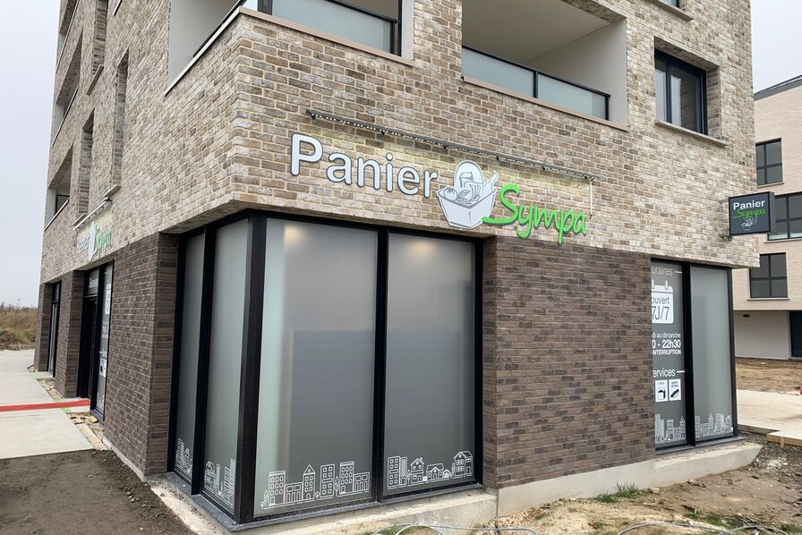

Panier Sympa
Stage Professionnel • Full-Stack / Design
HTML / CSS
JavaScript
Firebase
UI/UX Design
Réalisé dans le cadre d'un stage, j'ai pris en charge l'intégralité du cycle de création de cette application web. J'ai d'abord conçu la maquette ergonomique avant de passer au développement de l'interface. J'ai également implémenté et structuré la base de données avec Firebase pour assurer la gestion dynamique du catalogue et des contenus.